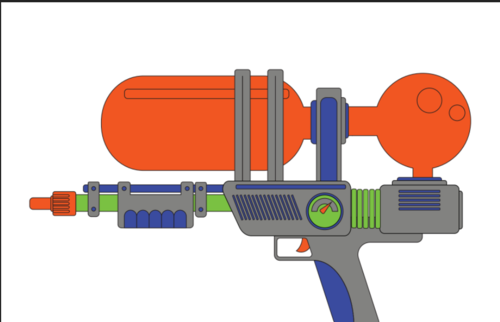
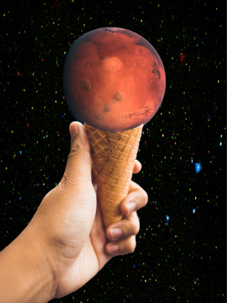

Andrew Pham Bui
Hi my name is Andrew Pham Bui and i would like to discuss my current professional experience with Adobe Illustrator, Adobe Photoshop, Volunteering experience, and being in multiple clubs in order to interact with other people. Despite these experiences, I learned how to use the two different programs Adobe Illustrator and Adobe Photoshop to edit photos and make them look better than they already were. An example of this would be creating different shapes in Adobe Illustrator, making banners, and make different shapes that would help us learn how to make items such as flower pots, emojis, and more. In Adobe Photoshop we learned how to make an image in another photo appear on one background photo. This assignment was very difficult as it required choosing images that were the right size and the right color because choosing a bright image in a dark environment would make it seem like someone just cropped an image and put on the same photo. Also in Adobe Photoshop we edited photos to make them look better by recreating the same image like a cartoon character but we would have to use a tool to create all those different shapes of the cartoon character and then we would have to use different colors to make a new cartoon character.
I have volunteered for Key Club which was apart of my school and i would usually do it on the weekends because I was incredibly busy on the weekdays. These experiences of volunteering helped me grow closer to my community as there are other key clubs in the same community who would do the same work with other key clubs. This created an opportunity for me to make more friends who weren’t even attending my school. In addition to this, people are amiable and are able to work with one another such as a task as cleaning the library by organizing the books from the pile of returned books. Another task would be hanging up Christmas decorations in the city by using equipment that were not supposed to be used for hanging these decorations up. We used a fishing pole, a broom, and a very long stick to help hang the decorations up a ladder which was only about six feet tall.
These may not be work experience but I spent most of my time learning how to interact with other people and how to work with them. This provided me with confidence every time I volunteered. This may seem like I do not volunteer or do any work but the tasks we were assigned to do took the entire time, we managed to pass the time by talking to one another. We were assigned in groups rather than working alone and each person working would be helping one way or another. I enjoyed the time to volunteer because it gave me more time to relax rather than just hitting the books. I see it as valuable memory that helped me grow as the person I am today.
Experience
Developer
• Apart of Interact Club
• Vounteered for Key Club
• Experience with HTML, Adobe Illustrator, Adobe Photoshop
Teaching Assistant
• Ran sessions to help students learn how to code
• Reviewed and graded student coding projects
• Created educational content to help promote student education
• TA'd for over 400 students each academic quarter
Education
UC Riverside
University of California Riverside
University of California Riverside
Portfolio

